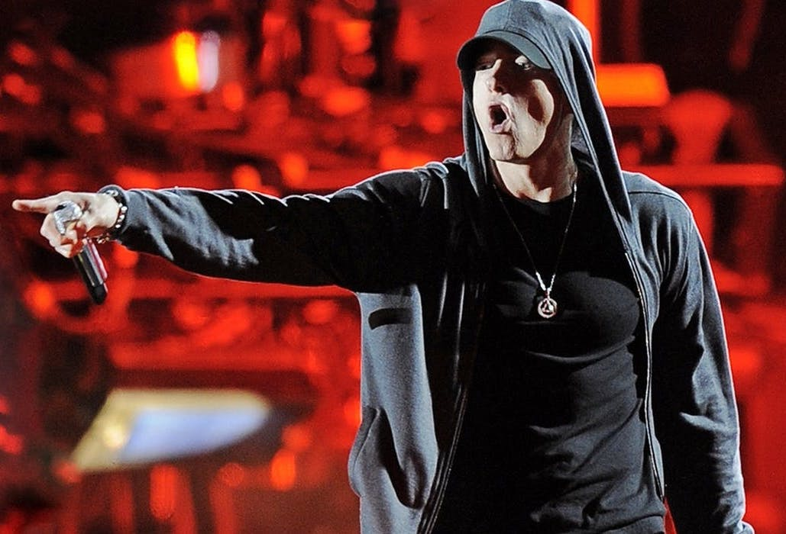
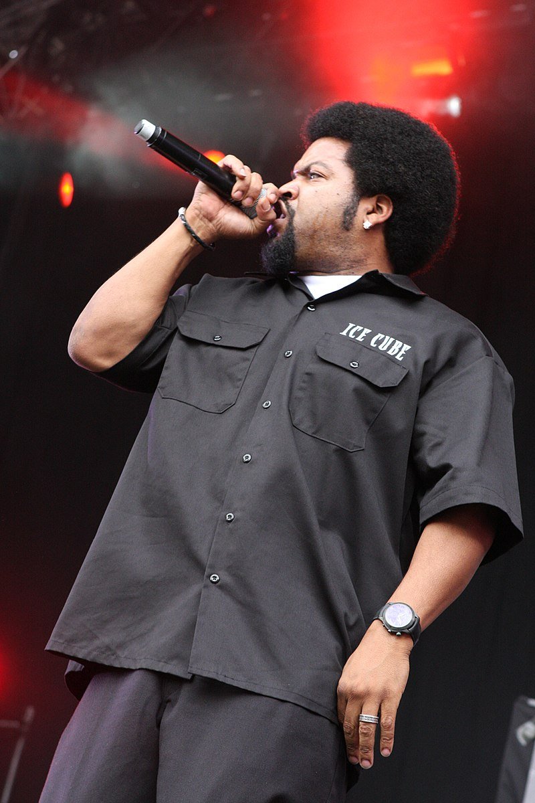

- Kendrick Lamar

- Nicki Minaj
- Eminem
 - Kanye West
- Ice Cube

Rap music is characterized by rhythmic spoken or chanted lyrics over a beat or musical backing. It typically explores a wide range of themes such as social issues, personal experience, and culture.